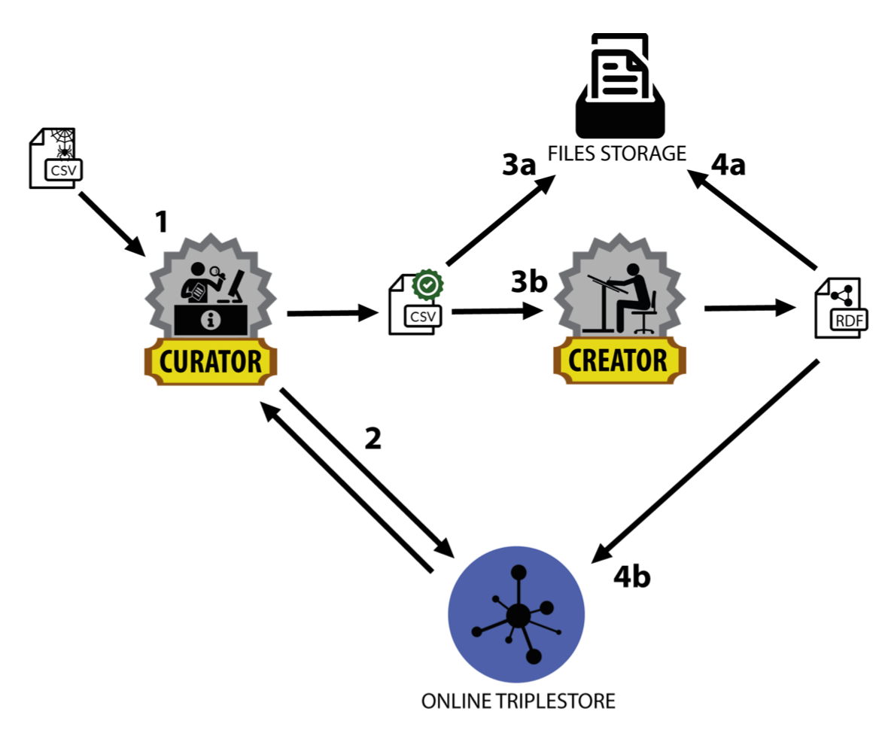
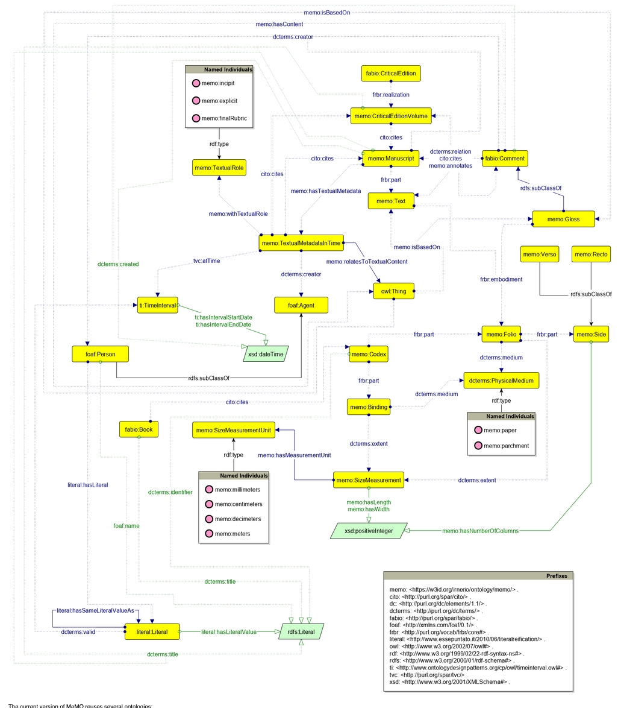
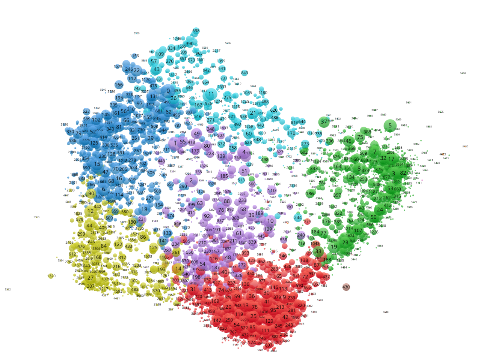
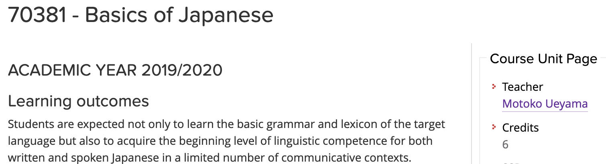

Describe in one or two words what you think this course is about
(Post-it will be provided by the professor)
Goal: how to use a language to communicate with and instruct an information-processing agent
Computer Science notions: algorithms, data structures, and algorithmic techniques
Language for communication: Python (yes, it is a programming language)
Some whispers of despair:
algorithms, computations, programming, etc., are something which I cannot handle – indeed, I did not like mathematics at the high school
I am not able to abstract a situation by using formal tools since I am not a formal person
I cannot learn a programming language
These are just prejudices
Several of the things the book introduces are something that all of us already learned and digested during our life - it is only a matter of identifying them again to reuse them consciously
Intelligence is a muscle, it can be developed - we can learn anything, including Computer Science topics, despite what others say
More info in: Dweck, C. (2006). Mindset: The New Psychology of Success. Random USA. ISBN: 978-0345472328
A programming language is a language, such as Italian and English - we need time and practice to learn it properly
Suggested mindset: be an hackerone who enjoys the intellectual challenge of creatively overcoming or circumventing limitations
We don't trust you!
OK, then see what it (has) happened

Bachelor:
History

Bachelor:
Humanities

Bachelor:
Information Science for Management
Did some of you have experienced any of the following issues in the past? - Raise your hands if you were obliged:
to buy one or more books
to attend mandatorily a large part of the course for attending the final exam
not to participate to an exam session for some informal rule imposed by the professor
not to receive the maximum score if you attended the exam without attending the lectures
Think and Compute: a Primer for Digital Humanists (official book of the course) + accompanying book How To Code in Python
All the material (including slides) is available in the GitHub repository of the course at https://github.com/comp-data/2025-2026/
Have you found a mistake in the official book? Please add a GitHub issue in the book repository
We use a Discord discussion group for communicating with each other
Invitation link to join the workspace: https://discord.gg/gvsV93Wsz
Once you entered in the workspace following the previous link, you will be added to the private channel dedicated to the course (comp-data-26-27
) by me
Please, do a Discord account as soon as possible (e.g. during the break) since I will close the invitation link in at the end of this week - and we will start to use it since Friday
This course and the DHDK Master Degree are part BolDH, of an ecosystem conceived as a combination of education, research practices, and scholarly projects in the Digital Humanities domain (in Bologna)
It has its own website and an Instagram account (boldh.unibo)
These channels will be used to highlight interesting events and initiatives about the DH domain
We will use the GitHub repository of the course for a series of activities, such as exercises and raising issues
Thus, please, create a new account on GitHub: https://github.com/join
Once logged into GitHub, go to the issue page of the course repository, and then feel free to add and respond to issues there
A very introductory guide to GitHub can be find online
As you know, Computational Management of Data is a 12 ECTS course, organised in two parts
Part I (October-December, 6 ECTS): dedicated to explore the basics of computational thinking and programming - taught by Silvio Peroni (me!)
Part II (February-March, 6 ECTS): dedicated to deep in topics related to data management and databases - taught by Ivan Heibi
Let's see the rules of this course
Two free text books are provided, and additional material can be found on the GitHub repository of the course
If you cannot attend, do not attend (even if attendance is recommended: you can ask questions)
At least six exam sessions per academic year
Theoretical part (30 hours), where I will introduce all the notions related to the course - no computer needed: 15 lectures of two hours each (today included)
Practical sessions, where Arcangelo Massari will be available for helping you in the issues that may arise during the course (e.g. solving exercises) - use Discord for coordination (e.g. topic to address and when)
Laboratorial part (18 hours), where Arcangelo (again) will have some practical lectures on programming languages - computer needed here
Theory: it introduces the tools for doing something - e.g. vocabulary and syntax of a language
Practice: it addresses assignments to enable people to learn and understand the correct way to use such tools - e.g. using the language vocabulary and syntax to write sentences to express a particular idea or situation
Laboratory: a workshop run by someone that enables one to use the tools learned to understand advanced concepts and to build wonderful (and complex) artifacts - e.g. writing a novel
| October | November | December | |||
|---|---|---|---|---|---|
| 07/10/26 09:00-11:00 | Introduction to the course | 09/11/26 09:00-11:00 | Laboratory: 3rd Lesson | 02/12/26 09:00-11:00 | Laboratory: 8th Lesson |
| 09/10/26 12:00-14:00 | Laboratory: 1st Lesson | 11/11/26 09:00-11:00 | Organising information: ordered structures | 04/12/26 09:00-11:00 | Dynamic programming algorithms |
| 12/10/26 09:00-11:00 | Introduction to Computational Thinking | 13/11/26 09:00-11:00 | Laboratory: 4th Lesson | 09/12/26 09:00-11:00 | Organising information: trees |
| 14/10/26 09:00-11:00 | Algorithms | 16/11/26 09:00-11:00 | Brute-force algorithms | 11/12/26 09:00-11:00 | Backtracking algorithms |
| 19/10/26 09:00-11:00 | Computability | 18/11/26 09:00-11:00 | Laboratory: 5th Lesson | 14/12/26 09:00-11:00 | Organising information: graphs |
| 21/10/26 09:00-11:00 | Programming languages | 20/11/26 09:00-11:00 | Organising information: unordered structures | 16/12/26 09:00-11:00 | Greedy algorithms |
| 23/10/26 12:00-14:00 | Laboratory: 2nd Lesson | 23/11/26 09:00-11:00 | Laboratory: 6th Lesson | 18/12/26 09:00-11:00 | Workshop |
| 25/11/26 09:00-11:00 | Recursion | ||||
| 27/11/26 09:00-11:00 | Laboratory: 7th Lesson | ||||
| 30/11/26 09:00-11:00 | Divide and conquer algorithms | ||||
The exam consists of:
A non-mandatory workshop (after the last lecture of Part I, probably on 18 December 2026, 09:00-12:00, to be confirmed), where the students are asked to organise themself in groups of 3-4 people (max. score: 3)
A written examination (duration: one hour and an half) about the Part I content (max. score: 32)
The implementation of a group project about the Part II content, where students are mandatorily asked to organise themself in groups of 3-4 people (max. score: 32)
If both the scores for points (2) and (3) are sufficient (i.e. min. 18), the final score is the sum of the scores of the previous slide, i.e. (1) + (2) + (3), divided by 2, and approximating it to the closest higher integer value in case of a decimal number
Any final score greater than 30 will be registered as 30 cum laude
Usually, during one of the last lectures of the course, you will be asked to fill-up a questionnaire on the organisation of the course and related stuff - it is anonymous, of course
Please, do it carefully and honestly, since it is one of the most important inputs I will have to understand what can be improved in the next year course
The fact that the course of this year is slightly different from the one held during the previous year one is mainly due to the comments I have received through these questionnaires
First laboratory lecture this Friday 9 October 2026
Please download in advance:
VSCodium - depending on your operating system (Windows, macOS, Linux) - other operating systems / distributions available at https://github.com/VSCodium/vscodium/releases
We will install properly them all together during the first laboratory session (with Arcangelo Massari)

Do you think that attending only to all the classes of a 6 credit course (i.e. 30 hours) on a foreign language is enough to master its basics?
Learning a programming language is like learning a new language: you need to practice it (a lot) to master it properly
Umberto Eco (1980). The Name of the Rose. Available online
In the face of some inexplicable facts you must try to imagine many general laws, whose connection with your facts escapes you. Then suddenly [...] you perceive a line of reasoning that seems more convincing than the others. You try applying it to all similar cases [...] and you discover that your intuition was right.
There is no single solution to a given problem, and the best one can be found only trying (and making mistakes, and trying again and again) more than one approach
Stephen Toulmin (1958). The Uses of Arguments. Available online
The purpose of these studies is to raise problems, not to solve them
Please do ask questions
There are no stupid questions
My answers can be odd though, sometime
Thus, in order to avoid such odd answers, I could ask you to be patient and wait for the next lecture, so as to provide you with the best possible answer ever